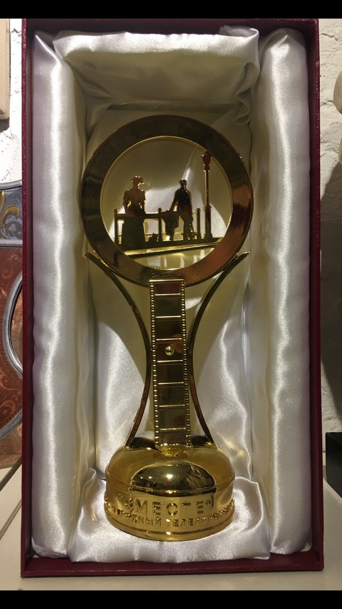

Сувениры и призы
Приз «ВМЕСТЕ»
Приз с надписью «ВМЕСТЕ» в футляре. В композиции соединены круг, мотив киноплёнки и силуэты двух фигур.
Награды / Приз
Персональные роли участников в этом кейсе не уточнены.
Материалы проекта
1 фото · 0 видео. Видео запускается только вручную.
